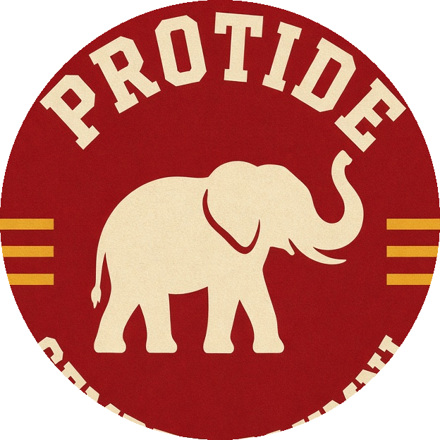

Bleacher Report for a college tree. One network, a channel per school. Version one is Oregon — stats, news, fantasy, draft measurables, NFL and CFL.
ProDucks is live. Empty tiles are the roadmap, not vaporware pages.
 Live
Live
Oregon football alumni — NFL, CFL, draft pipeline. 36 on 53-man rosters.

NextAlabama. Same engine, different skin.
Georgia. Shared player table, school filter.
 THE ALUMS
THE ALUMS